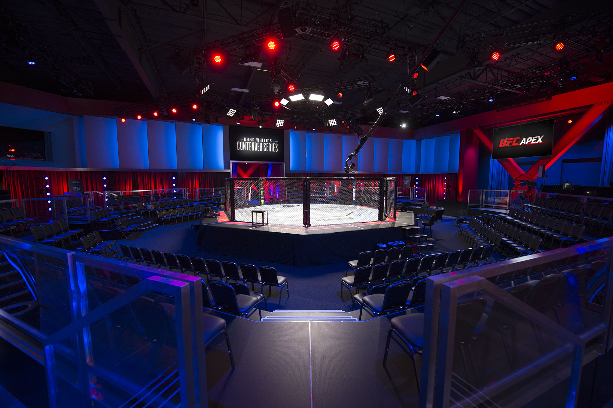
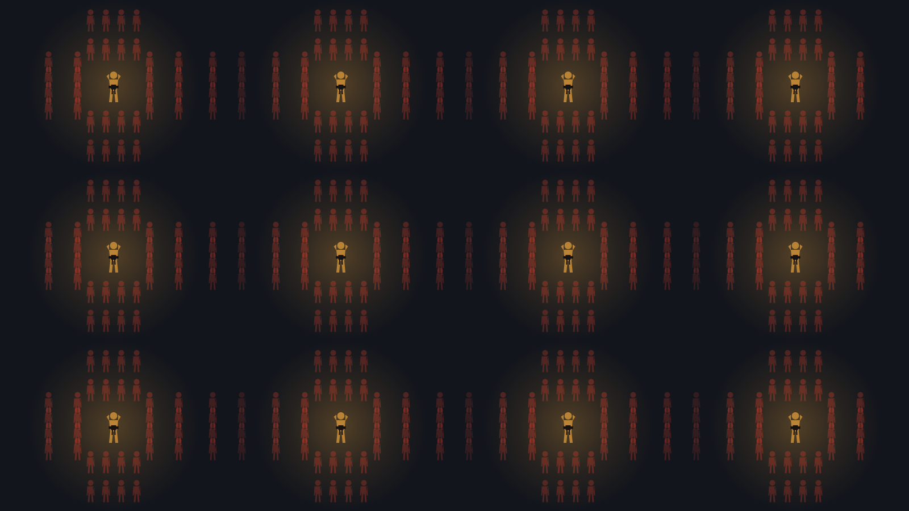

The investigations
Four ways to test this question.
Each article investigates a different facet of the UFC's modern operation: the treatment of their biggest stars,
the thought process behind their events, how the experience of attending a live event has changed for fans and
how they manage the sport of MMA.
Click the articles below to explore each of these ideas.
The fighters
The Absence of the UFC's Biggest Stars
Conor McGregor, Ronda Rousey, Jon Jones and more have all faced issues in returning to the Octagon. Ranking the sport's biggest stars and tracking six stalled returns to an organisation which feels like it no longer needs them.
15 biggest MMA stars ranked by reach
Read the investigation
The venue
The Apex Effect
A production studio that became the UFC's most important venue. Years after COVID, why is the Apex still one of the UFC's staple event locations?
30% of UFC events held there since 2023
Read the investigation
The fans
The Changing Live Experience
Four long-time fans and twenty years of ticket data. Prices at the UFC's most frequently used arenas have more than doubled; fans have their say on whether this is fair and how the experience of attending a live UFC event has changed.
2× ticket prices as 2007–15
Read the investigation
The sport
Gridlock at the Top
Are champions jumping weight classes slowing down divisions or does the UFC need to do a better job at damage control when the inevitable happens? The data suggests that congestion hasn't increased but controversy has.
~90% days of controversy in the Flyweight division
Read the investigation